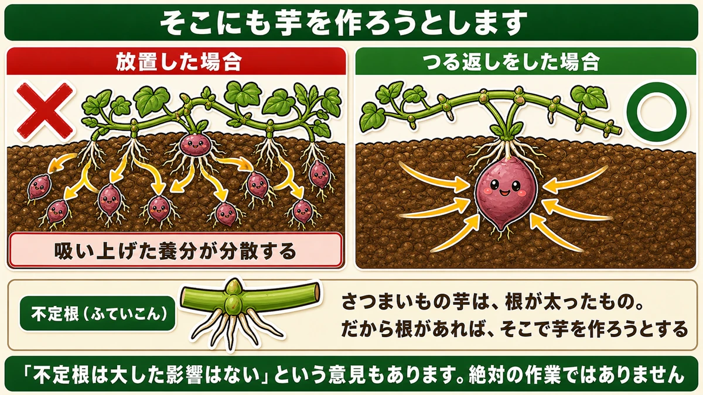
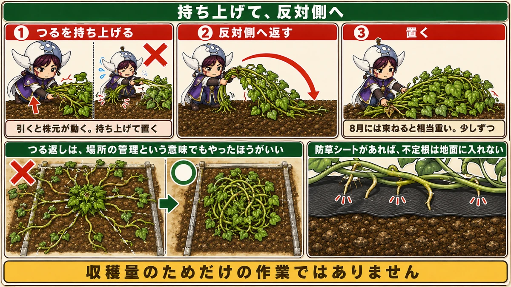
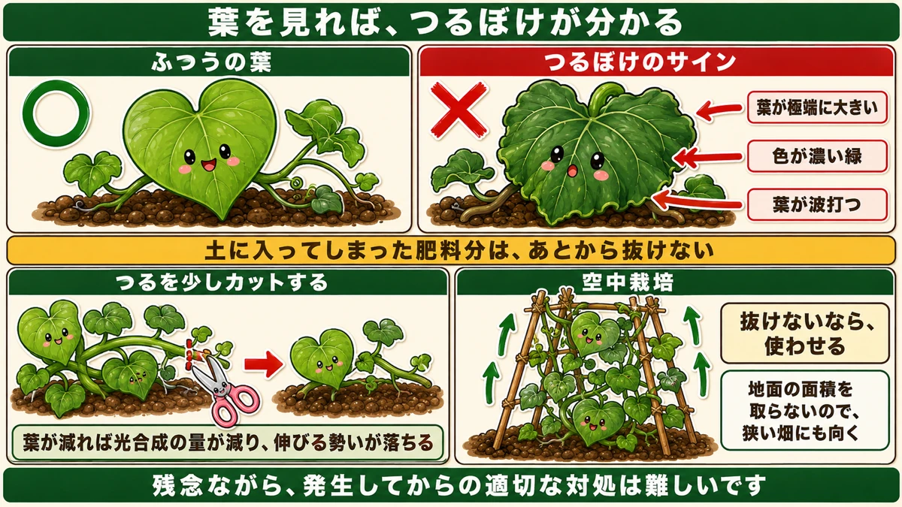
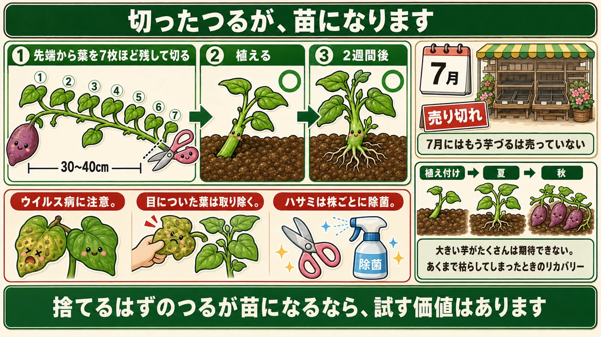

つるの節から根が出たら、そこにも芋を作ろうとします🍠 だから裏返す

🍠「葉ばかり茂って、いもができていない」
🍠「つるが隣の区画まで伸びてしまった」
🍠「つる返しって、やらないとだめ？」
どうも、8150（えいこう）です🌱 家庭菜園歴8年、理科の教員免許を持っていて、有機・無農薬で野菜を育てています。
7月の終わり、さつまいものつるが一気に伸びます。
この時期にやるかやらないかで、秋の芋の大きさが変わります。
先に、この記事でいちばん言いたいことを言っておきます。
★さつまいものつるは、途中から根を下ろします。
そして★その根が地面に入ると、そこにも芋を作ろうとします☺️
📖 この記事の目次
★★不定根（ふていこん）という根
つるの節から、根が出ます
さつまいものつるを持ち上げてみてください。
★節のところから、細い根が出ています。
これを★不定根（ふていこん）と言います。「決まった場所ではないところから出る根」という意味です。

★そこにも、芋を作ろうとします
問題はここからです。
★不定根が地面に潜っていくと、株はそこにも芋をつけようとします。
さつまいもの芋は、★根が太ったものです。だから根があれば、そこで芋を作ろうとする。
すると、どうなるか。
★吸い上げた養分が、あちこちに分散します。
★本来ねらっていた株元の芋が、その分だけ小さくなります。
だから、裏返します
対策は簡単です。
★つるを持ち上げて、裏返す。
地面から離してやれば、不定根は伸びていけません。★これが「つる返し」です。
★正直に言うと、意見は分かれます
ここは正直に書いておきます。
★「不定根が伸びても、大した影響はない」という方もいらっしゃいます。
私が読んだ資料でも、両方の意見が紹介されていました。★絶対にやらなければいけない作業ではありません。
ただ、こう言われています。
★家庭菜園の規模なら、作業はそこまで大変ではない。★やらないよりは、やったほうが大きい芋がねらえる。
★迷うくらいなら、やっておく。私はそう考えています。
★もうひとつ、大事な理由があります
つるは、四方に伸びます
家庭菜園には、収穫量とは別の問題があります。
★さつまいものつるは、株を中心にして四方に伸びていきます。
放っておくと、どこまでも伸びます。★2m、3mと平気で伸びます。

★隣の区画に、はみ出します
市民農園や、区画を借りている畑では、これが問題になります。
★隣の区画へはみ出してしまう。
自分の畑でも、通路をふさいだり、他の野菜の上に乗ったりします。
★つる返しは、場所の管理という意味でもやったほうがいいです。
★収穫量のためだけの作業ではありません。まわりに迷惑をかけないための作業でもあります。
やり方
持ち上げて、反対側へ
作業そのものは、拍子抜けするほど簡単です。
★伸びているつるを持ち上げて、反対側に向ける。
それだけです。★こちらへ伸びていたつるを、あちら側へ折り返す。
★重さに気をつけてください
ひとつだけ注意があります。
★大きくなると、つるを束ねたときにかなり重くなります。
7月の初めはまだ軽いのですが、8月になると相当な重さです。★腰を痛めないように、少しずつやってください。
そして★引っぱらないでください。持ち上げて、置く。引くと不定根が切れるのではなく、★株元が動いてしまいます。
★防草シートがあるなら、心配は少ない
もしうねに防草シートを張っているなら、朗報です。
★不定根はシートに防がれるので、地面に入っていけません。
それでも★つるが伸びすぎる問題は残るので、場所の管理としてはやっておいてください。
★★葉を見れば、つるぼけが分かる
さつまいもの、いちばん多い失敗
さつまいもでいちばん多い失敗が、★つるぼけです。
★つるも葉も立派なのに、掘ってみたら芋が小さい。
前にスナップエンドウのところでも、つるぼけの話をしました。★原因は同じで、肥料が効きすぎです。
★★葉に、3つのサインが出ます
つる返しをするときが、点検のチャンスです。★葉を見てください。

★1. 葉1枚が、極端に大きくなっていないか
普通より明らかに大きい葉が出ていたら、要注意です。
★2. 色が、濃い緑になっていないか
前に追肥の話をしたとき、「トマトは葉の色で判断する」とお伝えしました。★黄緑なら足りない、濃い緑なら足りている。
★さつまいもの場合、濃すぎるのは「効きすぎ」のサインです。
★3. 葉が、波打っていないか
葉の縁がうねうねと波打っている。これも肥料が多いときに出ます。
★この3つのどれかが出ていたら、つるぼけの可能性があります。
★★正直に言うと、出てからでは難しい
つらいことをお伝えします。
★つるぼけは、発生してからの適切な対処が難しいです。
★土に入ってしまった肥料分を、あとから抜くことはできません。
前に「遅れた追肥はやらない」という話をしました。★入れてしまったものは戻せない、というのは肥料の宿命です。
できることは、消費させること
それでも、打てる手はあります。
★つるを少しカットして、葉の数を減らす。
葉が減れば、★光合成の量が減ります。作られる養分が減れば、つるを伸ばす勢いも落ちます。
★勢いを止める、という考え方です。
★★空中栽培という手
やぐらを組んで、上に伸ばす
もうひとつ、面白い方法があります。
★やぐらを組んで、つるを上へ誘引する。★空中栽培と呼ばれるやり方です。
★家庭菜園ならではの小技だと思います。
★なぜ、つるぼけに効くのか
これが理屈として面白いところです。
★養分を上へ運ぶので、蓄えたエネルギーを消費してくれます。
つるが上へ伸びるには、力が要ります。★その力を使わせることで、余っていた肥料分を減らしていく。
★抜けないなら、使わせる。
土から肥料を取り除くことはできませんが、★株に使わせてしまうことはできます。
場所の節約にもなります
もうひとつ利点があります。
★上に伸ばすので、地面の面積を取りません。
狭い畑や、プランターで育てている方には、これだけでも試す価値があります。★きゅうりをネットで上へ伸ばすのと、同じ発想です。
★ウイルス病にも気をつけて
葉に、小さな斑点が出ていないか
つる返しのついでに、もうひとつ見てほしいものがあります。
★葉に、小さな斑点のようなものが出ていないか。
★さつまいもは、ウイルスによる病気が問題になっています。
対処のしかた
- ★目についた葉は、取り除く
- ★ひどくなる前に、株ごと抜く必要もある
前にじゃがいものモザイク病のところでお伝えしたとおり、★ウイルスは治せません。広がる前に取り除くしかない。
そして★ハサミは株ごとに除菌してください。人間が運ぶ、という話もじゃがいもと同じです。
★葉は、健康状態のバロメーターです
つるぼけも、ウイルス病も、★どちらも葉に出ます。
さつまいもは地面の下で育つので、★様子が見えない野菜です。
★見えるのは葉だけ。だから葉をよく見る。つる返しは、その機会にもなります。
★切ったつるは、苗になります
7月には、もう苗が売っていません
最後に、リカバリーの話をします。
★7月に入ると、さつまいもの苗（芋づる）はもう売っていません。
もし、それまで植えていた株が枯れてしまったら。★普通なら、その年はあきらめることになります。
★★でも、つる返しで切ったつるが使えます
方法があります。
★つる返しをして伸びたつるを、そのまま苗にできます。

やり方はこうです。
- ★先端から葉を7枚ほど残して切る
- ★長さは30〜40cmくらい
- ★それを植える
2週間で、根づきます
★2週間ほどで、しっかり定着して新しい芽も伸びてきます。
さつまいものつるは、それだけ生命力が強い。★もともと苗が「芋づる」であることを考えれば、当たり前とも言えます。
★ただし、期待しすぎないでください
正直に書いておきます。
★この時期の植え付けなので、大きい芋がたくさん穫れることは期待できません。
育つ期間が短いからです。★あくまで「枯らしてしまったときのリカバリー」です。
それでも、★何も穫れないよりはずっといい。捨てるはずのつるが苗になるなら、試す価値はあります。
7月の終わりに、1回
この記事の要点
- ★★さつまいものつるは、節から不定根（ふていこん）という根を出す
- ★不定根が地面に入ると、そこにも芋を作ろうとする
- ★★吸い上げた養分が分散して、株元の芋が小さくなる
- ★対策は、つるを持ち上げて裏返す（つる返し）
- ★「不定根は大した影響はない」という意見もある。★絶対の作業ではない
- ★家庭菜園の規模なら大変ではない。★迷うくらいならやっておく
- ★つるは四方に2〜3m伸びる。★隣の区画にはみ出す
- ★つる返しは、場所の管理という意味でもやったほうがいい
- やり方は★持ち上げて反対側へ。★引っぱらず、持ち上げて置く
- ★8月には束ねると相当重い。少しずつやる
- ★防草シートがあれば不定根は地面に入れない
- つるぼけのサインは葉に出る＝★①葉が極端に大きい ②★色が濃い緑 ③★葉が波打つ
- ★★出てからの対処は難しい。★土に入った肥料は抜けない
- できることは★つるを少しカットして葉を減らし、光合成の量を抑える
- ★★空中栽培＝やぐらを組んで上へ誘引する
- ★養分を上へ運ぶので、蓄えたエネルギーを消費してくれる。★抜けないなら、使わせる
- ★地面の面積を取らないので、狭い畑にも向く
- ★葉に小さな斑点が出ていないか見る。★さつまいもはウイルス病が問題になっている
- ★目についた葉は取り除く。★ひどければ株ごと抜く。★ハサミは株ごとに除菌
- ★さつまいもは地下で育つので、★見えるのは葉だけ
- ★7月にはもう苗が売っていない
- ★★つる返しで切ったつるを、そのまま苗にできる
- ★先端から葉を7枚ほど残して、30〜40cmで切って植える
- ★2週間ほどで定着して、新しい芽も伸びる
- ★ただし大きい芋がたくさんは期待できない。あくまでリカバリー
全部やろうとしなくて大丈夫です。まずは今週末、★つるを1本持ち上げて、節を見てみてください。細い根が出ていたら、それが不定根です🍠
次回は、秋じゃがいもの話。男爵が秋に向かない理由を、はっきりお話しします🥔
ここまで読んでくださって、ありがとうございました。
収穫ハサミ
つるを切って苗にするときにも使います。切ったつるは、そのまま挿せば根がつきます。
![[商品価格に関しましては、リンクが作成された時点と現時点で情報が変更されている場合がございます。]](https://hbb.afl.rakuten.co.jp/hgb/56d22030.def85fa7.56d22031.b89fde86/?me_id=1250472&item_id=10022339&pc=https%3A%2F%2Fthumbnail.image.rakuten.co.jp%2F%400_mall%2Fplantz%2Fcabinet%2F01%2Ft-13.jpg%3F_ex%3D240x240&s=240x240&t=picttext "[商品価格に関しましては、リンクが作成された時点と現時点で情報が変更されている場合がございます。]")

黒マルチ
つるが地面に触れなければ、不定根そのものが出にくくなります。

アーチ支柱
空中栽培にするなら、つるを持ち上げておく骨が要ります。

ネット
つるを這わせて浮かせます。つる返しの手間がほとんど無くなります。
![[商品価格に関しましては、リンクが作成された時点と現時点で情報が変更されている場合がございます。]](https://hbb.afl.rakuten.co.jp/hgb/56d221a0.da732c49.56d221a1.b57a6709/?me_id=1230952&item_id=10006162&pc=https%3A%2F%2Fthumbnail.image.rakuten.co.jp%2F%400_mall%2Fnou-nou%2Fcabinet%2Fnousi2%2F0108008000005.jpg%3F_ex%3D240x240&s=240x240&t=picttext "[商品価格に関しましては、リンクが作成された時点と現時点で情報が変更されている場合がございます。]")
あわせて読みたい